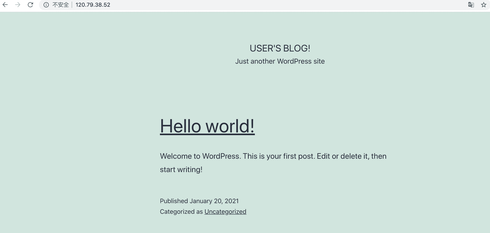
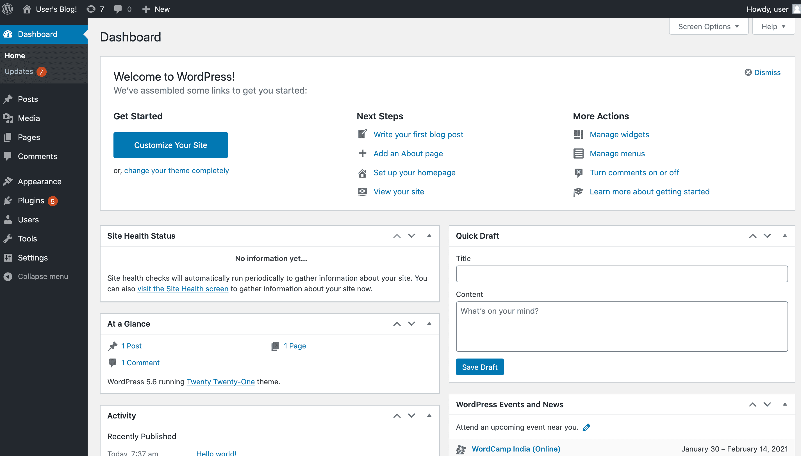

本实验，你将使用 Kubernetes 包管理工具 helm 部署一个 wordpress 应用到 ack 集群中，并通过 LoadBalancer 将部署的服务暴露出来由外部访问。
通过本实验，你将学习：
Step 2 ：部署业务应用
首先，我们需要添加 WordPress 官方Repo地址：
1
|
helm3 repo add bitnami https://charts.bitnami.com/bitnami
|
执行 Helm Install 部署 WordPress：
1
2
3
4
5
|
helm3 install wordpress bitnami/wordpress \
--set mariadb.primary.persistence.enabled=true \
--set mariadb.primary.persistence.storageClass=alicloud-disk-ssd \
--set mariadb.primary.persistence.size=20Gi \
--set persistence.enabled=false
|
其中：
- 为了实现数据的持久化，mariadb 使用持久化存储卷保存数据；
- 持久化存储选用阿里云 ssd 云盘，大小为 20Gi，并通过配置 StorageClassName 自动化创建；
- WordPress 不需要进行数据持久化，数据卷选项可配置为 false
执行成功后，应该有如下返回：
1
2
3
4
5
6
7
8
9
10
11
12
13
14
15
16
17
18
19
20
21
22
23
24
25
26
27
28
29
|
NAME: wordpress
LAST DEPLOYED: Wed Jan 20 15:09:45 2021
NAMESPACE: handsonack
STATUS: deployed
REVISION: 1
NOTES:
** Please be patient while the chart is being deployed **
Your WordPress site can be accessed through the following DNS name from within your cluster:
wordpress.handsonack.svc.cluster.local (port 80)
To access your WordPress site from outside the cluster follow the steps below:
1. Get the WordPress URL by running these commands:
NOTE: It may take a few minutes for the LoadBalancer IP to be available.
Watch the status with: 'kubectl get svc --namespace handsonack -w wordpress'
export SERVICE_IP=$(kubectl get svc --namespace handsonack wordpress --template "{{ range (index .status.loadBalancer.ingress 0) }}{{.}}{{ end }}")
echo "WordPress URL: http://$SERVICE_IP/"
echo "WordPress Admin URL: http://$SERVICE_IP/admin"
2. Open a browser and access WordPress using the obtained URL.
3. Login with the following credentials below to see your blog:
echo Username: user
echo Password: $(kubectl get secret --namespace handsonack wordpress -o jsonpath="{.data.wordpress-password}" | base64 --decode)
|
也可以通过以下命令查看部署状态：
Step 3 ：访问 WordPress 应用
1. 获取访问地址
首先，我们需要找到刚才部署的 WordPress 的访问地址。
通过运行下面的命令来获取 WordPress 的 LoadBalancer 地址：
1
|
kubectl get svc wordpress
|
将获得如下的返回：
1
2
|
NAME TYPE CLUSTER-IP EXTERNAL-IP PORT(S) AGE
wordpress LoadBalancer 172.21.7.165 120.79.38.52 80:32034/TCP,443:31842/TCP 117s
|
其中的 EXTERNAL-IP 就是当前 WordPress 应用外网可访问的 IP 地址。
通过浏览器访问该 EXTERNAL-IP 地址，我们可以看到 WordPress 应用的首页：

2. 访问后台
为了能进入 WordPress 的后台，我们先要获取后台的用户名和密码。
前文的 helm3 status wordpress 命令的返回值已经给出了提示，访问后台的用户名就是 user。
而 user 用户的密码则需要通过下面的命令来获得：
1
|
kubectl get secret wordpress -o jsonpath="{.data.wordpress-password}" | base64 --decode
|
在终端的返回值中，你会看到类似下面的结果：
这一段文本就是用户 user 的密码。
接着，我们需要通过地址 http://47.100.82.29/wp-admin/ 访问 WordPress 的后台：
其中的 EXTERNAL-IP 就是前文中获得的 WordPress 的 LoadBalancer 地址。
在浏览器访问后台地址，并输入用户名和密码会看到如下页面：

至此，WordPress 产品部署完成，并成功访问前台和后台。
Step 4 ：删除 WordPress 应用
最后，通过 uninstall 命令删除部署的workpress：
1
|
helm3 uninstall wordpress
|